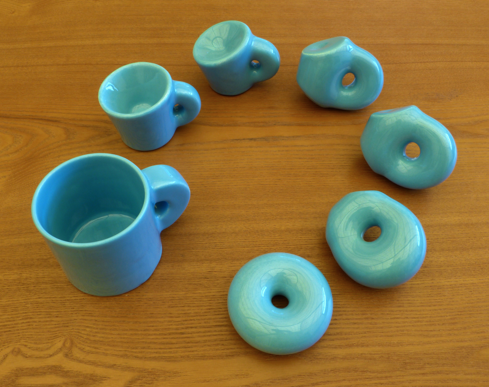
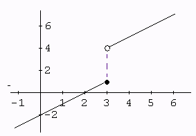

2 Topology
“[…] mathematics stands above everything. The works of Abel and Kronecker are as good today as they were four hundred years ago, and it will always be so. New roads arise, but the old ones lead on. They do not become overgrown. There… there you have eternity. Only mathematics does not fear it. Up there, I understood how final it is. And strong. There was nothing like it. And the fact that I had to struggle was also good. I slaved away at it, and when I couldn’t sleep I would go over, in my mind, the material I had studied that day.”
— Stanisław Lem, in “Return from the stars”
In this chapter we will define topological spaces and some of its properties, the notion of homeomorphism and so on.
2.1 What is topology?
Topology is the study of topological spaces and its properties. Unfortunately, this is not enough to close this chapter.
A topological space can be thought of as a set with little “scales” called open sets. Each of these open sets represent the notion of local continuity or connectivity that we sense when we look at an object: the feeling that it is just “one single piece of a thing”, like the scales in a fish. We can stretch these scales, but can’t rip them apart. In a sense, topological spaces are elastic. Because of that, there is an old joke that a topologist can’t distinguish between a cup and a donut.

More formally,
Definition 2.1 A topological space is a pair \((X, \tau)\) where
\(X\) is a set;
\(\tau\) is a set of subsets of \(X\), that is: each \(U \in \tau\) is a set \(U \subseteq X\).
The set \(\tau\) has the following properties:
the intersection of a finite number of open sets is also an open set;
the union of an arbitrary (even infinity) number of open sets is also an open set;
the \(\emptyset\) and \(X\) are open sets.
The set \(\tau\) is called a topology on \(X\).
We often omit \(\tau\) and simply write “a topological space \(X\)”. Sometimes we omit the “topological” too. We love omiting!
Definition 2.2 The set of all subsets (or “parts”) of \(X\) is denoted by \(P(X)\), that is,
\[ P(X) = \{ U \; | \; U \subseteq X \}. \]
Given a set \(X\), there is a easy way to generate a topology on it:
Definition 2.3 Let \(X\) be a set and \(S \subseteq P(X)\). Define \(\tau\) \(\{\emptyset, X\}\) united with finite intersections and arbitrary unions of elements of \(S\). The pair \((X, \tau)\) is a topological space, and \(\tau\) is said to be “generated by \(S\)”. We also say that \(S\) is a generator set for \(\tau\).
Don’t let the abstractions hurt you! Whenever you see a new definition or theorem, think of an example of objects that fit in it. One very useful example is the following:
Example 2.1 The standard topology on the set \(\mathbb{R}\) of real numbers is generated by the open intervals \((a, b) \subseteq \mathbb{R}\).
In the above case, an open set is a set in which one can always “walk a little more without reaching the end of the set”. More precisely, given \(x \in (a, b)\) there is always a small enough \(\epsilon > 0\) such the interval \((x - \epsilon, x + \epsilon)\) is contained in \((a, b)\).
!![fora de lugar] When an open set \(U\) cannot be written as the disjoint union of two open sets, we say that \(U\) is connected. These connected open sets give a notion of “being a single piece”.
2.2 Continuity
We learn in Calculus that a function \(f: \mathbb{R} \to \mathbb{R}\) is continuous when we can draw its graph “without lifting the pencil from the paper”. Formalizing this notion of continuity took centuries and made many mathematicians go crazy.2 Let’s try to formalize what is “to lift the pencil from the paper” with the following example:

We notice that no matter how close to 3 we choose some \(x \in \mathbb{R}\), its image \(f(x)\) will end up being far away from \(f(3)\). A bit more precisely, there is a small interval around \(f(3)\), say \((f(3) - \epsilon, f(3) + \epsilon)\), such that no matter how small we chose an interval around \(3\), say \((3 - \delta, 3 + \delta)\) we will have that
\[ f(x) \notin (f(3) - \epsilon, f(3) + \epsilon), \; \text{for some } x \in (3 - \delta, 3 + \delta). \]
!![checar se faz sentido] This is equivalent to the fact that the inverse image of \((f(3) - \epsilon, f(3) + \epsilon)\) is not an open set: if it were an open set, we could always “walk a little” on this interval, and still be sent by \(f\) to \((f(3) - \epsilon, f(3) + \epsilon)\).
Inspired by that, we define the following in the much more general context of topological spaces:
Definition 2.4 Given two topological spaces \((X, \tau)\) and \((Y, \sigma)\), a function \(f: X \to Y\) is said to be continuous if the inverse image of any open set of \(Y\) is also an open set of \(X\). In symbols:
\[ \forall \; V \in \sigma, \; f^{-1}(V) \in \tau. \]
Remark. Negating what we obtained in our example above leads us to the definition of continuity of real functions, and to the most terrifying single line of math of first-year students: a function \(f: \mathbb{R} \to \mathbb{R}\) is continuous if for every point \(a \in \mathbb{R}\) we have
\[ \forall \epsilon > 0, \exists \delta > 0 \text{ such that } x \in (a - \delta, a + \delta) \text{ implies } f(x) \in (f(a) - \epsilon, f(a) + \epsilon), \]
which is equivalent to \(\lim_{x \to a} f(x) = a\).
2.3 The notion of “sameness” in topology
Let’s digress a little.
A topological space is completely define by a set \(X\) and its open sets \(\tau\). If we just “rename” the elements of \(X\), then it is intuitive that this new topological space is as similar to \(X\) as possible; in fact, they are indistinguishable from each other: every topological property (ie: properties related to open sets) that the first has, the second also has.
Renaming points is just a informally way to say “bijection of sets”. So, two topological spaces \(X\) and \(Y\) are “the same thing, topologically speaking” if there is a bijection \(f: X \to Y\) such that \(U \subseteq X\) is open if and only if \(f(X) \subseteq Y\) is open. More precisely,
Definition 2.5 We say that two topological spaces \(X\) and \(Y\) are homeomorphic if there exists a continuous bijection \(f: X \to Y\) such that \(f^{-1}\) is also continuous. In this case, \(f\) is called an homeomorphism.